孖仔帮
公众号ID：twinsbang
关注
文|圆圈妈
网图|侵删
我问你，什么是双胞胎？
大多数人都会脱口而出：“双胞胎就是一模一样的一对啊。”
包括我自己在内。
BUT，那只是少女时代的我，认为而已，现在我的回答是：“就是一个天使，一个魔鬼般存在着的两个不同个体。”
嗯，这不是我一个人这样认为。
推文《我怀疑我生了对假双胞胎》《为什么双胞胎总是一个天使，一个魔鬼》发布后，收到很多私信和留言纷纷吐槽，双胞胎其实也有很多不一样的地方。
是不是真的哟？没图没证据啊！
那么今天这篇是征集令，诚意邀请家有双胞胎家庭投稿，晒出双胞胎孩子们的合照，让大家伙都来点评下，你们家双胞胎是一模一样还是一模两样？
所有投稿经过筛选后会在六一儿童节当天的推文发布出来，以高调晒娃的方式庆祝双胞胎孩子们的儿童节，给孩子们一个独特难忘而有意义的节日。
晒娃版块会分为两部分：一模一样双胞胎和一模两样双胞胎。
投稿截止时间：即日起至5月30日
参与方法
找一张双胞胎刚出生的合影（一月龄以内的也行），注意，必须是双胞胎同时出镜的合照或拼图哦。
拍一张现在的合照（如果没有，也可以是近期拍摄的哦）
介绍下双胞胎的小名，简单说说这两张合照背后的故事，也可以顺便发表下升级双胞胎爸爸妈妈后的坎坷心路历程，比如：孕期那种小激动，产后那种小混乱，现在的小期待，以及对双胞胎孩子们的祝愿，字数200字以内。
请将照片和感言发送给孖仔帮小助手3，微信号sgguy-com，备注“儿童节征集令”
注意哦：投稿时，跟小助手说明下你要投稿的晒娃版块是“一模一样双胞胎”还是“一模两样双胞胎”，千万不要丢两张照片和文字就完事了，一定要备注所投版块哦，别为难小助手，她有严重的脸盲症。
也可以识别下方二维码，或者在文末处点击“阅读原文”，投稿给我们哈！
为感谢读者朋友们的踊跃参与，凡是投稿的双胞胎爸爸妈妈都有一个小福利☟☟
无需申请即可加入双胞胎各大主题社群，当然，大前提是家有双胞胎，爸爸群仅限宝爸，妈妈群仅限宝妈，其他群无限制。
领取小福利的方式：私信小助手，发投稿截图，说明想去的社群，待审核后就会收到群聊邀请链接。
另外，此次征集令还设置了抽奖环节哦，投稿一经采纳，就有机会参加#最像样的双胞胎#，#最不像样的双胞胎#投票活动，投票点赞票数最高者，将获得香港海马牌价值199元的记忆枕儿童枕一对。
温馨提示：投稿采纳后，圆圈妈妈会汇总整理成文，在儿童节当天的公众号推文发布出来，全程0打码，若是比较介意出镜，可忽略此活动，感谢关注哈。
投稿案例，来一段双胞胎圆圆圈圈的萌娃秀@两只羊
4岁10个月
2020/5/18深圳·杨梅坑
我们家双胞胎是一对男孩，单绒双羊同卵双胞胎，小名圆圆&圈圈，觉得像吗？
他们刚出生就被抱走了，图片是在留医部新生儿科工作的朋友给我发来的，那时是出生后的第二天。
我和圆圈爸拿着照片研究了一个下午，心中只有一个概念，这俩娃怎么长那么丑，一样的丑，真希望是朋友拍错了。
不过，丑归丑，终究是亲生的，认了呗。实不相瞒，看着这丑照，我是看一阵哭一阵，剖腹产后第一次下床时钻心蚀骨的痛，我愣是没吭声，瞧着这两个小奶娃的照片，竟然又哭又笑。
现在圆圈快5岁了，我竟然哭笑不得。
两个男娃的世界，跟打魔兽一样，整天都是猩球大战中凯撒归来的视觉效果，可惜我不是漫威英雄，每天炮灰好几次，被秒杀好几回是家常便饭，好在有一颗佛系的心态，满腔的鸡血，以及阿Q的精神，得以续命在此码字晒娃。
祝愿的话？只要健康平安快乐地长大，怎么虐我千百遍都无妨。
我知道你的手机里塞满的都是双胞胎小奶娃的照片，觉得每一张都是经典，每一张都不舍得删，每一张都觉得“我的天啦，我的双胞胎怎么可以那么可爱”...
这该怎么选？
好吧，我都给你想好了，下面这些双胞胎萌照应该可以给你一点小提示，来自Charlotte Becker的作品。
哎呀，被这几组twins图萌哭了，太暖人了，要不，咱也来一波真人版的双胞胎萌娃秀吧？
好呗，来晒照吧，高调晒出来吧！
▼识别下方二维码▼
或者在文末处点击“阅读原文”
投稿给我们吧
-END-
今日互动话题
#来晒娃吧#
评论区聊一聊呗！
微信公众号：孖仔帮
ID : twinsbang
专注双胞胎孕育，养育，教育经验分享
扫码关注我们
点一下你会更好看耶
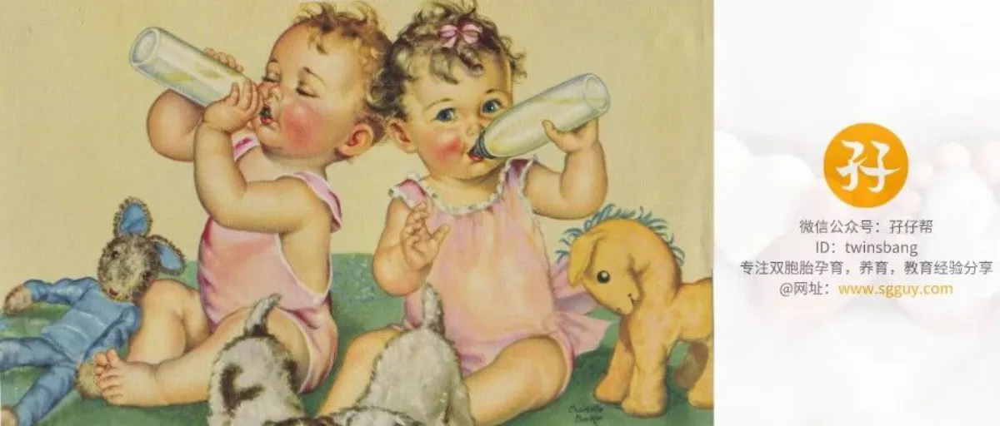
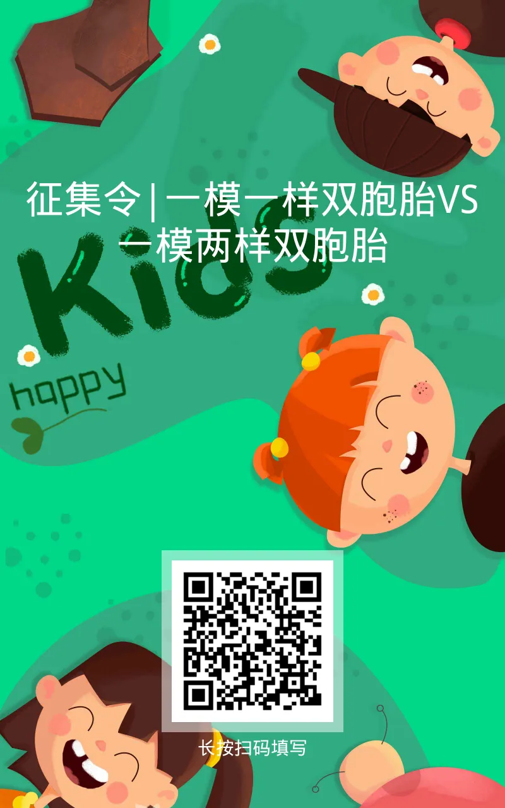


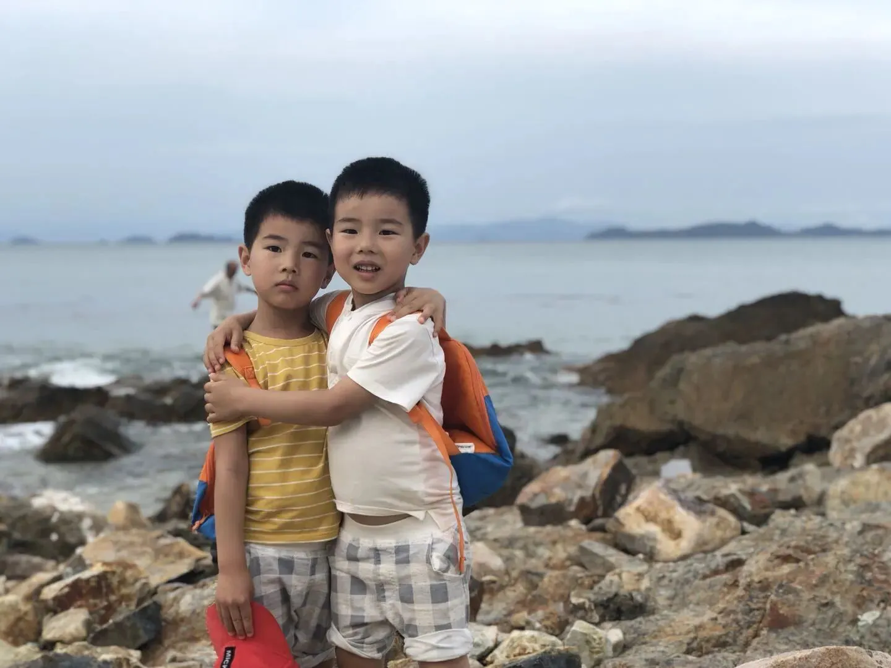
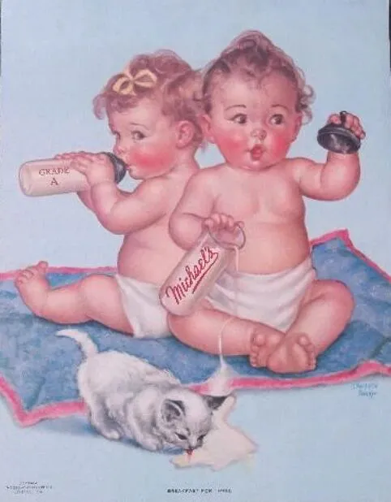
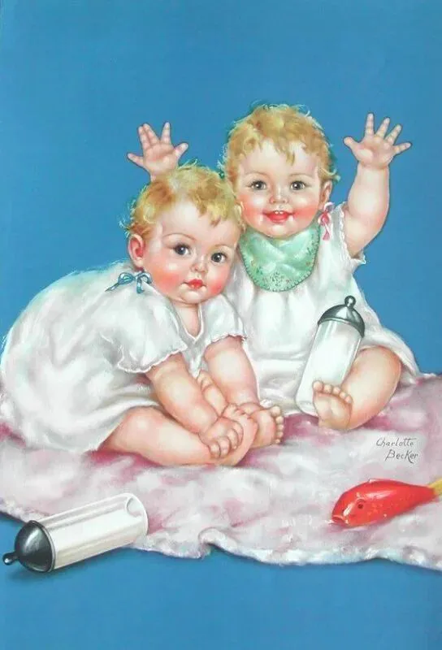
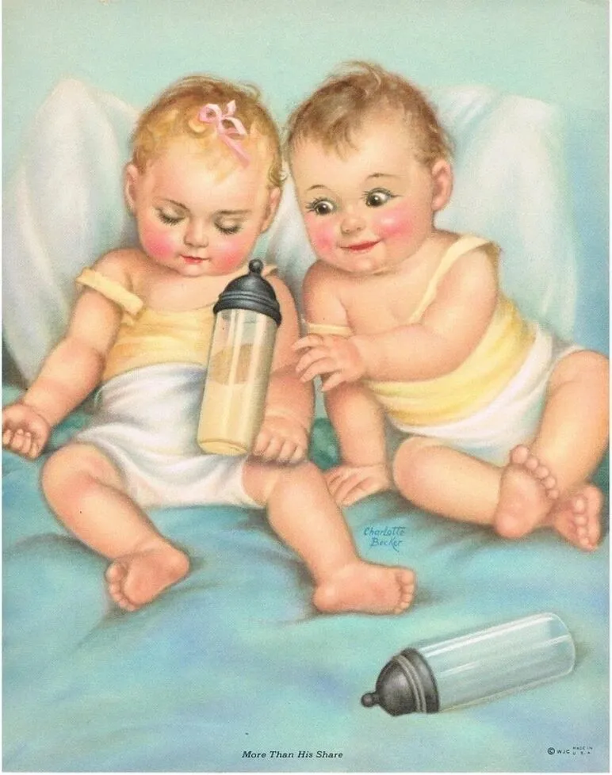
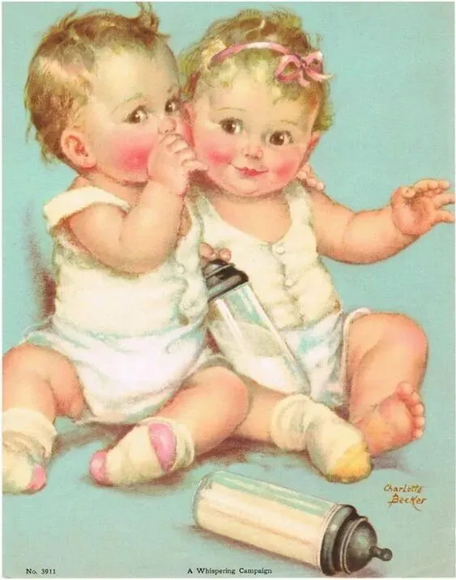
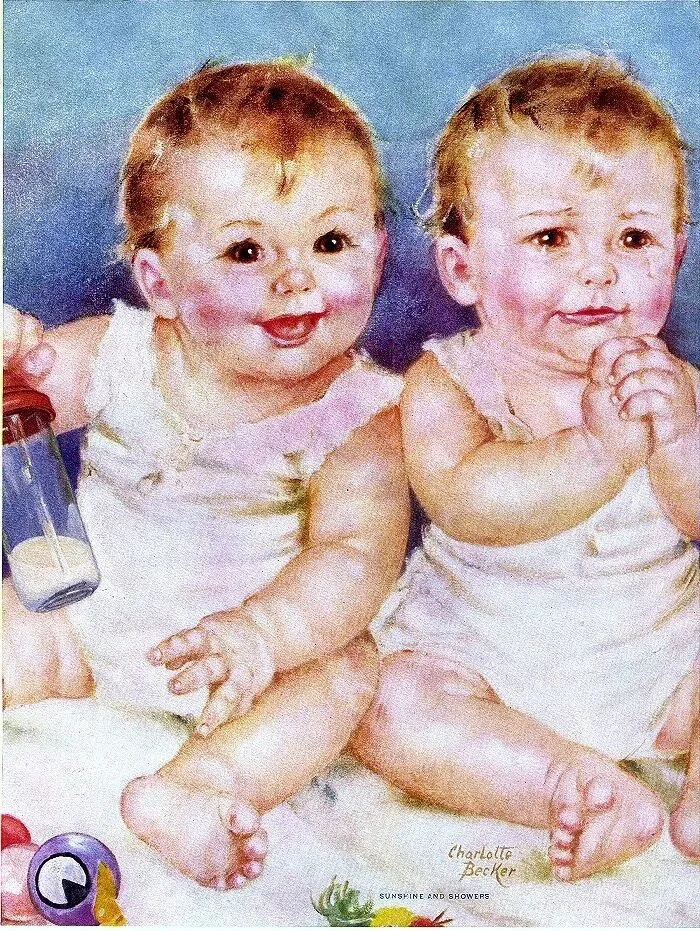
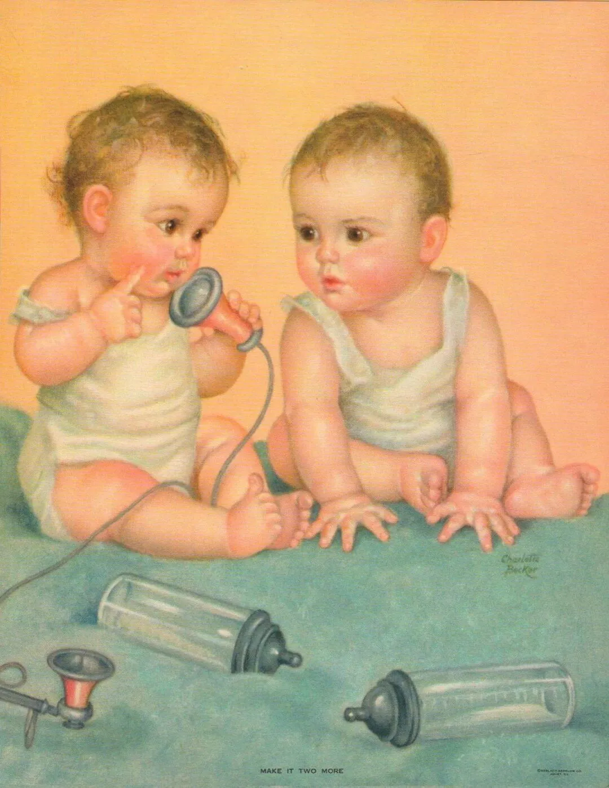
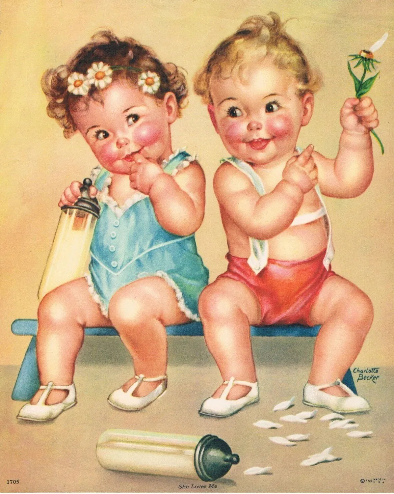
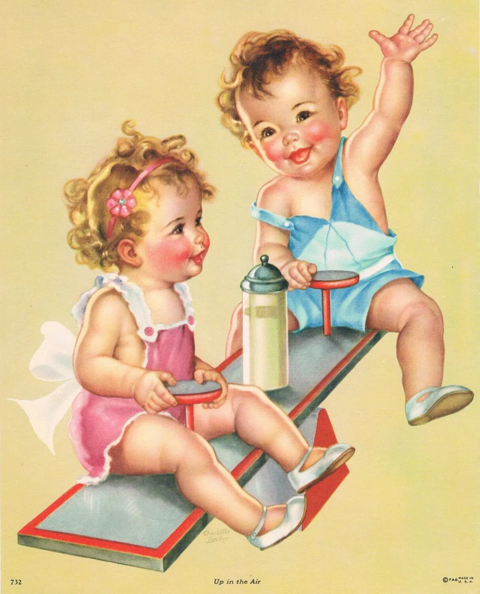